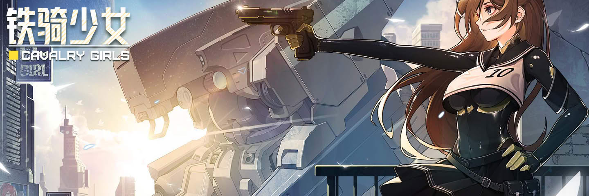

背景设定: 游戏发生在一个架空的未来世界, 人们发现某些人群拥有感应和操控"玉"的异能, 能工巧匠们开始尝试将玉打造成复杂的器械, 以此为契机, 仿生机械革命提前到来了, 各种各样的仿生器械随之出现, 这当然也包括了用于战争的巨型兵器既"铁骑", 不同势力也因玉矿开采权而产生了纷争, 而游戏的开端便是源于"联合帝国"与"贸易联盟"在半岛的开采权冲突, 战火逐渐蔓延, 没有丝毫缓和的迹象……
故事起源: 玛丽原本是生活在联合帝国境内的普通少女, 由于国家在战事中逐渐失利而战力紧张, 政府开始强迫异能者必须进入军队服役, 而玛丽的平淡生活便在觉醒了异能后被彻底打破了, 为了保障家人的安全, 他被强制送入军校学习驾驭铁骑, 毕业不久之后就被派上了战场, 开始负责某道防线的守卫, 他得坚守 100 天, 等待大部队到来, 但腐朽的帝国政局黑暗, 敌势汹涌, 他究竟能否撑到援军的到达?
新手起步: 铁骑少女拥有多种游玩模式, 它们的重点和玩法都各有差异, 如果你是首次接触该游戏, 建议从剧情模式开始, 因为它有引导内容, 游戏的各项机制也会随着天数推进而逐步解锁, 这有利于我们渐进式地去熟悉每个功能, 从而避免一次性面对太多概念而头昏脑胀, 该模式有四个难度, 分别是[故事/正常/硬核/残酷], 难度是逐步递增的, 你得先通关过一次故事或者正常, 才能够挑战硬核或者残酷:
1.故事难度:
便于体验剧情, 可以使用控制台(在整备界面能获得物品, 训练场可调出任意敌人), 允许回档(回到[1/3/9]天前), 不能获得成就
2.正常难度:
常规流程体验, 敌人相较于故事难度有些许强化, 该难度下无法使用控制台, 允许回档(回到[1/3/9]天前), 可以正常地获得成就
3.硬核难度:
你必须通关过一次[故事难度/正常难度]才可以选择该难度, 无法使用控制台, 无法回档(但还是可以正常SL), 敌人会变得很强大
4.残酷难度:
你必须通关过一次[故事难度/正常难度]才可以选择该难度, 在硬核难度的基础上进一步增强了敌人, 基地运营也变得更加艰难了
————
有限提示: 新手指南是 XJ 在完成了所有的数据页面后才编撰的, 由于许多机制已经在游戏数据的页面中解释得很详细, 所以指南可能就不会再进行深入的剖析了(毕竟重复也没有意义), 某些细节会被一笔带过, 但描述会尽量附上相关的链接, 以便当你想深入了解时, 可以尽情探索, 下面是剧情模式的一些提示+总结, 它们当然无法解答你的所有疑惑, 不过了解一番, 有助于帮助你快速构筑起一个基本概念:
Tip01: 我们需要在该模式下坚守
Tip02: 如果你在教学关卡攻击教练机, 系统将会提示"检测到不轨行为", 如果把教练机给打爆了, 游戏将会直接结束;
Tip03: 每天的整备阶段是发生于当天战斗结束后, 我们指的某天, 和整备阶段界面顶部天数是对应的;
Tip04: 休息日可让驾驶员在宿舍休息(能降低脑负荷), 也可让他们去执行各种任务(但会增加脑负荷);
Tip05: 该模式下初始只有玛丽, 其余驾驶员会在第
Tip06: 尽管驾驶员有能力差异, 他们的铁骑也有性能区别, 但并不存在谁就特别强的情况, 所以不用在意顺序, 反正到最后都会入队的;
Tip07: 除了故事难度, 其余难度的敌人都得到了增强, 细节可查阅 奖惩机制.html # 剧情模式的难度强化(会自带 N 个难度强化选项);
Tip08: 不同难度下的税费支出和战后收益也都有差异, 细节可查阅 费用计算.html 以及 剧情模式.html(资金/荣誉);
Tip09: 该模式下的机制是逐步解锁的, 先后顺序和具体日期可查阅 剧情环境.html(点击右上角翻页);
Tip10: 剧情模式有[结束/叛逃/革命]共三个结局, 革命是"真结局", 它只能在硬核或残酷难度下达成;
Tip11: 相同条件下, 如果是故事或正常难度, 就只能达成叛逃的结局, 如果不是革命或叛逃结局, 那就是保底的结束;
Tip12: 革命结局要求你配合叛军完成系列任务, 自行探索当然也行, 但如果不介意被剧透, 也可以查阅 剧情环境.html # 02.额外拓展;
最佳拍档: 你可以选择任意 2 位驾驶员组队开局, 在指定地点歼灭敌军, 至少进行第一场 Boss 战后, 结束战斗就能够得到"驻防点", 驻防点可用来进行全局强化, 你也可以增加敌人的强度以获得更多驻防点, 该模式的一大特点, 就是允许双人游玩(不过 2P 需要用游戏手柄控制, 当然, 如果你没手柄或没朋友, 也可以将 2P 委托给 AI 控制):
Tip01: 该模式需要坚守
Tip02: 如果只派队友上场, 那么可控制队友的铁骑, 如果自己上场, 只能控制自己的铁骑, 队友的铁骑会由 AI 接管;
Tip03: 与剧情模式的防守战不同, 挑战模式的战场中并没有大门需要防守(城防界面也就没有大门), 只要将战场中的所有敌人歼灭即可;
Tip04: 于战场按 Tab 打开战略面板, 点击左下角按钮对友军下达指令, 目前共有[专注方向/防守地点/跟随移动/自由行动]四种指令;
Tip05: 战场中央有两层沙袋, 推荐下达"防守地点"指令, 让队友呆在沙袋中心, 依靠沙袋, 可以极大提升队友生存率;
Tip06: 由于该模式并没有忠诚度概念, 所以下达指令给队友时必定成功, 并不会出现违抗命令的情况;
Tip07: 尽管战场中央总会有两圈沙袋, 但类似剧情模式也有选择地图的事件, 战场的元素也会有变化;
Tip08: 该模式没有脑负荷机制, 所以不能装修宿舍和装备饰品, 使用技能也不会涨脑负荷, 但需要以荣誉收益为代价;
Tip09: 挑战模式的全局增益需要靠驻防点解锁, 而驻防点来源于在该模式下所坚守的天数, 细节可查阅 奖惩机制.html # 02.全局增益;
Tip10: 该模式的物品不受解锁天数限制, 只要在价格范围内都可出现, 但采购部门只在打败 Boss 那天开放(而且也无法刷新更多选项);
Tip11: 有好几个跟挑战模式相关的成就, 但无需逐个完成, 完成了高等级难度挑战, 则低难度的成就也会被同时解锁;
Tip12: 假日任务需要有驾驶员在基地才能获得收益, 但奖励人力或战略武器时除外, 收益和人数无关;
————
外围强敌: 在该模式下, 初期就可能会出现武士或沙虫的外围阵地, 尽管外围阵地也不是非打不可, 但如果你眼馋收益, 以下是些小技巧, 首先是对付武士, 可用无视盾牌的光枪或光矛, 再以铁墙等障碍为掩护, 保持距离突刺对方, 其次是面对沙虫, 可用泵动炮或轻机枪等高伤害武器, 集中火力攻击对方护甲已破损的部位, 最后是尽量拖延, 这些外围阵地的持续时间都比较长, 晚一天挑战就多一天时间准备
永不落幕: 你可以选择任意 1 位驾驶员开局(该角色也会成为小队的队长), 进行防守大门的战斗(和剧情模式相同), 不过在该模式下, 坚守的天数是无限的, 你可以一直战斗下去, 直到你主动退役, 或是被敌人汹涌的攻势所淹没, 敌人在整个流程中, 将不断获得各种 Buff 增强, 而你的运营则会受到各种 Debuff 削弱, 是一种挑战极限的玩法:
Tip01: 无尽模式以
Tip02: 词条存在等级(越高影响就越大), 只有前一级词条选完, 下一级词条才会出现, 词条会在选择后的第二天生效;
Tip03: 如果你能一直坚守下去, 那么大约会在第一百三十九天左右选完所有词条选项, 更多细节可查阅 奖惩机制.html # 01.难度强化;
Tip04: 外勤任务和假日安排的奖励, 会随着循环周数而翻倍(第二周×2,第三周×3…), 但是这些行动所增加的脑负荷并不会跟着一起增多;
Tip05: 每个循环会有两人入队, 凑齐五人后, 入队事件会变成增加出战人数上限(需要
Tip06: 尽管可以选择任意角色开局, 但从综合性来讲, 选择玛丽较为合适, 毕竟游骑兵号普适性最好;
Tip07: 相比剧情模式, 该模式队友不会送特殊家具, 会议室召开战后总结会议无法增加角色能力上限;
Tip08: 剧情模式下队长没有忠诚度, 也没有忠诚度奖励, 但该模式下, 所有驾驶员入队后, 队长也能得到忠诚度奖励;
Tip09: 队长的忠诚度奖励, 和队伍里忠诚度最低那个队友同步(触发该队友的 LVN 奖励事件后, 第二天也会触发队长的 LVN 奖励事件);
Tip10: 该模式有个成就叫"永恒传奇", 要求坚守到第
Tip11: 如果坚守到第 150 天再展开最终战斗并连胜 100 场, 就能一次性解锁以上两个成就(相关低级成就也会解锁);
Tip12: 无尽模式也能像剧情模式那样, 在战场中临时切换以控制队友的铁骑(其他模式只能下达指令);
————
性能问题: 在无尽模式的中后期, 你可能会面临铺天盖地的敌人, 或许你并不害怕这潮水般的攻势, 但你的电脑却未必顶得住, 假如你想缓解机器的卡顿问题, 以下是些实用小技巧, 首先是在设置界面, 将屏幕震动幅度和屏幕震动时长设定为最低, 其次是主动出击, 尽快剿灭敌人, 别让对方扎堆, 最后是尽量不用高爆类武器, 因为这类武器会在地面留下爆炸痕迹的贴图, 当贴图过多时就会额外损耗许多资源
闯关求生: 你可以选择任意 1 位驾驶员开局, 在战场展开类似于挑战模式那样歼灭战(无需防守大门), 每歼灭一定数量的敌军, 就可以进入下个关卡, 同时获得过关奖励并进行整备, 但在整备的阶段, 铁骑不会自动恢复 HP, 也无法自行制造装备, 你的所有收益均源于通过关卡后的随机奖励, 这是一种充满挑战性的玩法(该模式无法进行保存):
Tip01: 幸存模式有
Tip02: 歼灭敌人可积攒进度值, 满了就能到下一关, 当 Boss 出现后必须将其歼灭, 否则进度值满了也无法到下一关;
Tip03: 关卡所需进度值是逐步递增的, 具体取决于关卡的荣誉奖励, 细节可查阅 特殊遭遇.html # 03.额外拓展(幸存模式的进度算法);
Tip04: 由于装备获取随机且有限, 因此最好是一开始就定下武器的构筑方向, 如果三心二意, 很可能导致最后武器无法升级到最高等级;
Tip05: 武器融合是增强武器的好方法, 但该模式物资紧缺, 所以最好把融合都留给毕业武器, 毕竟融合配件无法迁移;
Tip06: 该模式没有合成车间的系统, 所以无法合成装备, 但可以直接右键武器, 将其升级到终极武器;
Tip07: 应该尽可能利用烙印配件和复制装备的功能, 因为奖励是随机的, 未必能得到自己想要的东西;
Tip08: 该模式复制装备的次数不会重置, 所以所需资金会越来越多, 操作需要慎重(右键武器后在右上角有复制按钮);
Tip09: 除了昼夜阴晴的状态, 幸存模式还有清晨与黄昏, 虽然对战局并无太大影响(但实际上并没有真的日期变化, 只是在某一天循环);
Tip10: 每隔几关就会触发特殊的固定奖励, 奖励内容包括了[核心/荣誉/勋章/资金/恢复机体血量]等选项, 细节可查阅 特殊遭遇.html;
Tip11: 核心可升级武器, 荣誉可解锁技能, 勋章可提升能力(建议提升武器维护, 因为资金有限, 维修武器是个问题);
Tip12: 奖励物品的价格会逐渐提升, 如果初期没选择某种装备实现解锁, 后期可能就没机会再解锁了;
————
补充知识: 首先, 在该模式下, 解锁无人机无需核心, 只需要"(无人机数量-1)×50"的资金, 其次, 如果关卡奖励出现治疗枪, 一定要拿, 然后给无人机装上, 可以解决铁骑的回血问题, 再者, 该模式无法存档, 如果不想继续玩, 可以在整备页面点击退役, 也能得到生存点数(如果直接退出就什么都没有了), 最后, 即便挑战失败也无所谓, 每次尝试都会积累生存点, 可兑换各种增益, 过关的可能性会越来越高
影子战术: 扮演库罗库, 了解他的过去, 在有限的天数内完成任务并迎接最终挑战, 所有的任务均可选择歼灭敌军, 或采用秘密潜入完成, 该模式是游戏首个 DLC 既三叶草新增的内容, 玩法有些类似《赏金奇兵》或《盟军敢死队》, 富含隐蔽与暗杀的要素, 与该游戏其他刚正面的模式不同, 你需要的是谨慎以及算计, 但它也充满了惊险和刺激:
Tip01: 该模式需要坚守
Tip02: 潜入无需击杀所有敌人, 只要完成了任务目标即可撤离, 但击杀可获得额外资金奖励, 所以有条件就尽量杀吧;
Tip03: 你不是非得采用潜行, 如果能正面打败敌人, 那也是可以的, 不过在任务中被发现会导致战后收益减少, 所以尽可能选择暗杀吧;
Tip04: ESC 菜单的"游戏性设置"里有自动爆破和自动暗杀, 推荐开启, 这样就不需要一边控制方向一边按住 F(这种操作难度真的很高);
Tip05: 被一个敌人发现, 警觉数会 +1(被同个敌人再次发现, 警觉数不会再 +1), 此时可以远离敌人以消除警戒状态;
Tip06: 被炮台发现不会导致警觉数上升, 但攻击炮台可能引起警觉, 所以最好先解决那些移动的机体;
Tip07: 躲在树丛里可避免被敌人发现, 敌人视野比他们的探照灯更远(蹲据后敌人视野仅限探照范围);
Tip08: 面对复数敌人时, 最稳妥的打法是丢震撼弹(投掷物)把敌人弄晕再暗杀, 如果震撼弹还在 CD, 可按 ALT 加速;
Tip09: 初期由于装备问题, 在防守战时很难直面敌军, 推荐是绕到敌人身后暗杀, 由于敌人会直扑大门, 警惕性较低, 所以操作并不难;
Tip10: 暗杀可
Tip11: 暗杀效率是可叠加的, 除了为匕首安装暗杀模块, 你还可以在整备人员界面右上角, 使用荣誉点换取刀刃饰品;
Tip12: 该模式不可带无人机(可能干扰暗杀), 也没有脑负荷系统(使用战场技能会扣除战后荣誉收益);
————
决战技巧: 该模式下最后的 Boss 带有护盾(且护盾恢复速度特别快), 你几乎没有正面取胜的可能, 因此最佳选择依然是用震撼弹击晕再暗杀, 首次暗杀只能打破对方的护盾, 第二次暗杀才能削减对方的 HP, 但一次暗杀只能去掉他 HP 的 1/3 , 之后他就会重启护盾并召唤更多敌军追杀你, 此时你得尽量避开他, 让他从警戒模式再次进入到搜索状态, 然后重复之前的击晕和暗杀, 反复操作三次就能取得胜利
剑戟交互: 扮演桑, 了解他的过去, 在有限的天数内, 进入随机生成的地牢, 击败各种特殊敌人, 获取武器和装备, 并迎接最终挑战, 该模式是游戏第二个 DLC 既红莲花新增的内容, 它带来了全新的探索和作战机制, 并且还增加了许多特殊的近战武器, 让这款射击游戏同时带上了动作的元素, 现在, 考验玩家反应速度和操作技巧的时刻来临了:
Tip01: 该模式有剧情(
Tip02: 该模式的龙骑士号无法装备远程武器(也不会出现远程武器), 但能装备两把双手近战武器(切换的按键为 Q);
Tip03: 该模式下近战武器类型丰富, 但推荐新手使用防守反击玩法的龙骑剑盾, 其它武器难度较高, 建议熟悉了基本操作后再进行尝试;
Tip04: 在战场中获取装备之后, 将会自动打开整备界面安装, 那些没被装到机体上的物品, 无法被保留, 过了这个场景就会自动消失了;
Tip05: 在战场中, 如果想保留未安装的物品, 可将其拖到物品格子右下角, 移动回仓库(价格约为物品价格的
Tip06: 在战后整备阶段, 将物品留在仓库并不会丢失, 但在战场打开整备界面没法调用仓库里的物品;
Tip07: 在非战斗状态之下, 可按 M, 打开地图界面, 用该界面可以在去过的房间之间进行快速传送;
Tip08: 除了获取装备之外, 也可以在非战斗状态时, 按 Tab, 打开指挥界面, 然后点击整备机体按钮进入整备界面;
Tip09: 在面对敌人的时候, 可按 F 锁定目标, 就无需手动调整对敌方向, 也可在 ESC 菜单的"游戏性设置"里勾选自动锁定的选项;
Tip10: 即使进入整备阶段, 铁骑血量也不会自动恢复, 你只能在整备机体的界面花钱维修恢复, 或在战场的特殊房间通过支付资金恢复;
Tip11: 只要打败 Boss 就能撤离, 不是非得把地图全部探开, 但清图能得到更多资金和装备, 这样有助于更好的发育;
Tip12: 进入小房间后, 如果存在敌人, 在它们都消灭之前, 无法退出该房间, 也无法进行整备或传送;
————
决战技巧: 该模式下的挑战形式, 最后 Boss 战的难度非常之高, 一方面是因为该形式的流程比较短, 发育受限, 另一方面是该 Boss 的各项属性远超我方, 战力惊人, 一种较为稳妥的作战方法, 就是使用龙骑剑盾, 认真防御伺机反杀, 还有就是, 为机体装备高级耐久模块, 尽可能的提升血量, 并在开战之前, 于机体整备界面, 通过修理机体, 将血量加满, 因为最后一天没有其他房间, 进入后就直接决战了